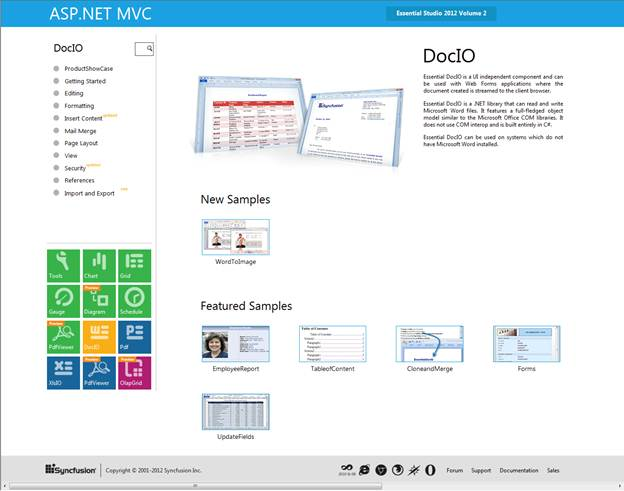
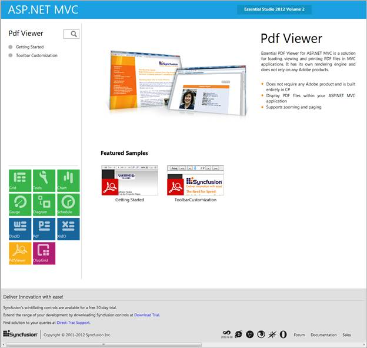

To view the PdfViewer samples:
1. Click Start -> All Programs-> Syncfusion -> Essential Studio <x.x.x.x> -> Dashboard -> Reporting.

Figure 2: Syncfusion Essential Studio Dashboard Reporting Edition
To view the PdfViewer samples for MVC platform:
2. Click the drop-down button of the MVC platform. The following options are displayed and you can view the samples in the following three ways:
· Run Samples-View the locally installed PdfViewer samples for MVC using the sample browser
· Online Samples-View the online PdfViewer samples for MVC
· Explore Samples-Locate the samples for PdfViewer on the disk
3. Click Run Samples link. Essential Studio - Reporting Edition sample browser is displayed.

Figure 3: MVC Sample Browser
4. Click Pdf Viewer from the FishEye panel that is displayed at the top of the page.

Figure 4: PDF Viewer Samples for MVC
5. A list of samples will be displayed on the left pane.
6. Select any sample and click Run Sample to browse through the sample features.